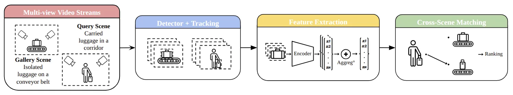
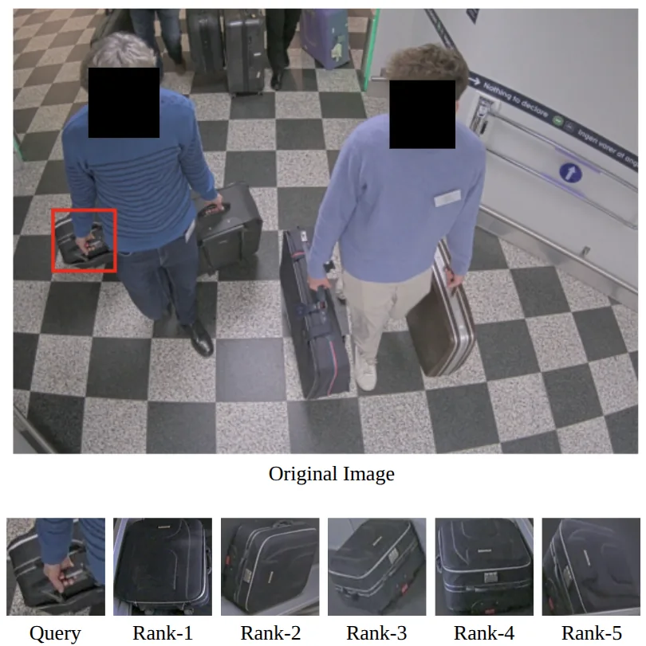
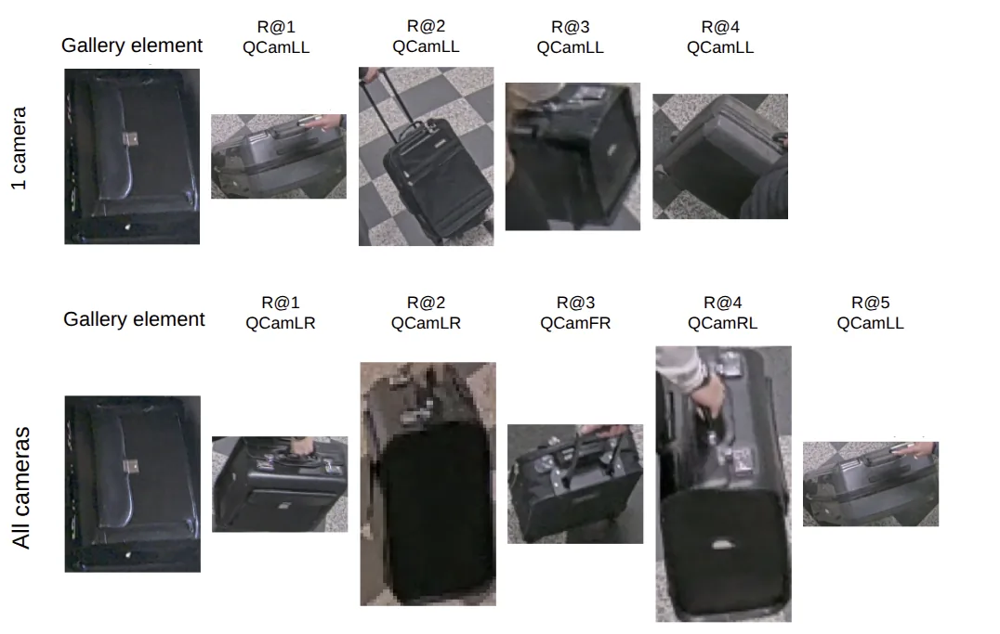

O Desafio da Reidentificação de Bagagens no Mundo Real
A reidentificação de objetos (Object ReID) é uma tarefa crítica em sistemas de vigilância por vídeo, especialmente em grandes hubs de transporte como aeroportos e estações de trem. Embora amplamente estudada para reconhecimento facial ou de pedestres, a reidentificação de bagagens apresenta desafios únicos. O objetivo é associar observações da mesma mala através de câmeras discretas, mesmo quando o ambiente é complexo, com oclusões frequentes, fundos desordenados e multidões.
A maioria das abordagens existentes foca em melhorar a extração de características visuais ou o aprendizado de métricas, assumindo condições relativamente limpas: detecções perfeitas e objetos totalmente visíveis. No entanto, a implantação real levanta questões sistêmicas que são frequentemente ignoradas. Quantas câmeras são realmente necessárias para uma reidentificação confiável? Devo agregar todos os frames disponíveis ou ruídos podem degradar o desempenho? Como explorar informações de múltiplas câmeras em configurações de vigilância assimétricas?
Neste contexto, o paper 'Luggage re-identification: A study of strategies towards a real-world application', de Quentin Dhote e Romaric Audigier da Université Paris-Saclay, propõe um pipeline end-to-end que opera a partir de múltiplos streams de vídeo. Em vez de focar apenas no modelo de deep learning, os autores investigam estratégias de seleção e fusão de visões e shots para melhorar o desempenho geral em aplicações práticas, como recuperação de malas perdidas ou análise forense.

Uma Abordagem Assimétrica: Galeria vs. Consulta
O cerne da contribuição deste trabalho é o reconhecimento de que os cenários de 'enrollment' (cadastro) e 'monitoramento' (consulta) são fundamentalmente diferentes. O pipeline é dividido em duas cenas disjuntas: a cena 'Gallery' e a cena 'Query'.
Na cena Gallery, as malas estão em uma esteira rolante após o desembarque. O movimento é previsível, consistente e controlado. Isso permite que trajetórias sejam associadas de forma confiável através das câmeras, facilitando a extração de observações representativas de cada instância de mala. É um ambiente estruturado.
Já a cena Query representa uma área de vigilância não restrita, onde passageiros carregam suas malas por um corredor. Aqui, o movimento é irregular, a visibilidade é fragmentada devido a oclusões (pessoas passando à frente), e as trajetórias não podem ser associadas consistentemente entre câmeras diferentes. A mala pode ser vista por poucos segundos ou de ângulos limitados.
Essa assimetria exige que o sistema trate as duas cenas de maneira distinta. Enquanto a galeria pode tirar proveito de múltiplas câmeras para criar uma representação rica e estável, a consulta deve lidar com a redundância temporal dentro de uma única câmera para compensar a falta de visão multi-ângulo consistente.
O Pipeline Proposto: Do Vídeo ao Ranking
O pipeline proposto consiste em quatro etapas principais, desenhadas para lidar com as características assimétricas mencionadas.
A primeira etapa é Detecção e Rastreamento (Detection and Tracking). Cada stream de vídeo é processado independentemente. Um detector de objetos, especificamente o CoDETR, identifica as malas e fornece bounding boxes e scores de confiança. Apenas detecções com score acima de um limiar são mantidas para reduzir falsos positivos. O rastreamento é feito por câmera na cena Query, pois não há associação cruzada confiável entre câmeras. Na cena Gallery, o rastreamento é mais estruturado.
A segunda etapa é a Construção de Representação Específica da Cena. Para a cena Gallery, uma representação multi-câmera é construída. Para cada mala, seleciona-se um frame representativo de cada câmera (no total de 5 câmeras na configuração do estudo), escolhendo a observação onde a mala está mais próxima do centro do campo de visão. Isso resulta em um conjunto fixo de 5 imagens por mala.
Para a cena Query, como as trajetórias são fragmentadas, a representação é construída temporalmente. Múltiplas observações de um mesmo track (sequência temporal na mesma câmera) são extraídas e combinadas em uma representação de nível de track. Isso permite que o sistema aproveite a redundância temporal: se uma mala é ocultada por um segundo, as frames anteriores e posteriores ainda podem contribuir para a representação final.
Extração de Features e Matching
Na terceira etapa, features visuais são extraídas para cada instância detectada. Os autores utilizam o algoritmo TransReID, um modelo baseado em Transformers pré-treinado no grande conjunto de dados MVB e finetunado no dataset construído para este estudo. As imagens de entrada são redimensionadas para 256x256 pixels.
O TransReID é escolhido por sua capacidade de capturar dependências de longo alcance nas imagens, o que pode ser benéfico para lidar com partes de objetos visíveis mesmo quando o objeto inteiro não está claro. As features extraídas são agregadas dependendo da estratégia de agregação multi-shot escolhida.
Finalmente, na etapa de Matching Cross-Cena, a reidentificação é realizada comparando as representações da cena Query contra as da cena Gallery. Cada track de consulta é comparado contra todos os tracks de galeria usando uma métrica de similaridade (distância Euclidiana no espaço de embeddings). Os candidatos da galeria são então ranqueados. O objetivo é encontrar a mala na galeria (esteira) que corresponde à mala sendo carregada por um passageiro na consulta.
Este design explora as forças complementares de ambas as cenas: informação multi-visual estruturada na galeria e redundância temporal na consulta. Isso mitiga efetivamente o impacto de oclusões e variações de ponto de vista em cenários de vigilância realistas.

Dataset Realista e Configuração Experimental
Para avaliar o sistema em condições realistas, os autores construíram um dataset de vídeo multi-câmera a partir de um aeroporto real, na área de alfândega. O dataset consiste em duas cenas disjuntas: Gallery (esteira de bagagem) e Query (corredor de saída dos passageiros).
A configuração de aquisição envolve 5 câmeras na cena Gallery e 6 câmeras na cena Query. As câmeras são posicionadas ao redor da área de interesse, orientadas para uma região comum para maximizar a cobertura. Para estabelecer correspondências entre as cenas, as malas foram anotadas manualmente, selecionando trajetórias consistentes.
O dataset resultante contém 116 malas, com múltiplas observações de cada instância através de diferentes câmeras e passos de tempo. Isso resulta naturalmente em variações de ponto de vista, iluminação e oclusões parciais. No total, o dataset possui 579 tracks de galeria e 745 tracks de consulta, com uma média de aproximadamente 18 imagens por track. Essa configuração permite avaliar estratégias de agregação multi-visão em condições realistas, longe dos benchmarks limpos e sintéticos comuns na literatura.
Estratégias de Agregação e Seleção de Frames
Uma parte crucial do estudo é a análise de como agregar as features quando múltiplas detecções estão disponíveis para um mesmo objeto ao longo do tempo (na cena Query) ou de diferentes câmeras (na cena Gallery). Os autores testam várias variantes.
Uma baseline é usar apenas um frame aleatório por track. Outra baseline usa o frame com a maior confiança de detecção. Uma terceira variante usa todas as observações disponíveis sem filtragem por confiança, agregando-as diretamente.
A proposta dos autores é uma estratégia de agregação que considera apenas as K detecções mais confiáveis. Isso visa equilibrar a quantidade de informação (usar mais frames pode ajudar, mas também introduz ruído) com a qualidade dos dados (frames com baixa confiança podem conter detecções erradas ou oclusões severas). A agregação temporal permite que o sistema 'lide' com o fato de que a mala pode não ser vista claramente em todos os frames, mas a combinação de vários frames parcialmente visíveis pode formar uma representação robusta.

Resultados e Análise
O desempenho foi avaliado usando métricas padrão de ReID, incluindo CMC (Cumulative Matching Characteristics) nos ranks 1, 5 e 10, e mAP (mean Average Precision). O protocolo de avaliação é bidirecional: Query-to-Gallery (Q->G) e Gallery-to-Query (G->Q).
Os resultados mostram que a abordagem proposta supera as baselines de frame único (aleatório ou de maior confiança). O uso de agregação temporal e a seleção de frames confiáveis melhoram a robustez. É importante notar que usar todas as observações sem filtragem pode não ser ideal, pois ruídos e detecções falsas podem degradar a performance, validando a necessidade de estratégias de seleção ou agregação ponderada.
Um ponto chave destacado nos resultados é o impacto do número de câmeras. A Figura 3 ilustra que usar todas as câmeras disponíveis aumenta a recall em comparação ao uso de apenas uma câmera. Isso valida a hipótese de que a visão multi-ângulo é essencial para lidar com oclusões. Se uma câmera perde a mala devido a uma obstrução, outra câmera pode ter uma visão clara.
Além disso, os autores analisam a adaptação cross-dataset. Treinar em um ambiente e testar em outro é um desafio comum. O estudo fornece insights sobre como a configuração de câmeras e a estratégia de agregação afetam a generalização do modelo.
Limitações e Trabalho Futuro
Apesar dos resultados promissores, o paper reconhece limitações. O dataset, embora realista, é limitado a 116 malas e um cenário específico de aeroporto. A generalização para outros tipos de ambientes ou tipos de objetos pode exigir mais investigação.
O pipeline atual depende de anotações manuais para estabelecer correspondências entre as cenas, o que não é escalável para novos ambientes sem custo de anotação. Os autores mencionam que o trabalho futuro investigará adaptação de domínio não supervisionada (unsupervised domain adaptation) para manter o desempenho em novos ambientes sem necessidade de novas anotações.
Outra limitação implícita é a complexidade computacional do pipeline end-to-end, que envolve detecção, rastreamento, extração de features e agregação em múltiplos streams. A eficiência em tempo real para grandes números de câmeras não é o foco principal deste estudo, mas é uma consideração prática importante para implantação em larga escala.
Em resumo, o paper oferece uma contribuição valiosa ao deslocar o foco da 'engenharia de features' para a 'engenharia de pipeline' em cenários reais. Ele demonstra que a forma como os dados são coletados, agregados e comparados é tão importante quanto o modelo de deep learning utilizado. Para cientistas de dados e engenheiros de visão computacional, a lição é clara: em problemas de vigilância real, a robustez vem da redundância (temporal e espacial) e do tratamento cuidadoso da assimetria entre os dados de treinamento e os dados de inferência.
O que fica
- O problema central não é apenas extrair features, mas gerenciar a assimetria entre câmeras de controle (esteira) e câmeras de consulta (corredor movimentado).
- A agregação temporal de detecções dentro de um mesmo track melhora a robustez contra oclusões e falhas de detecção pontuais.
- Usar todas as câmeras disponíveis aumenta significativamente a recall em comparação ao uso de uma única câmera, validando a necessidade de visão multi-ângulo.
- O pipeline propõe um método end-to-end que combina detecção, rastreamento por câmera e agregação de features antes do matching final.
Paper original: Luggage re-identification: A study of strategies towards a real-world application
Comentários
Nenhum comentário ainda. Seja o primeiro.